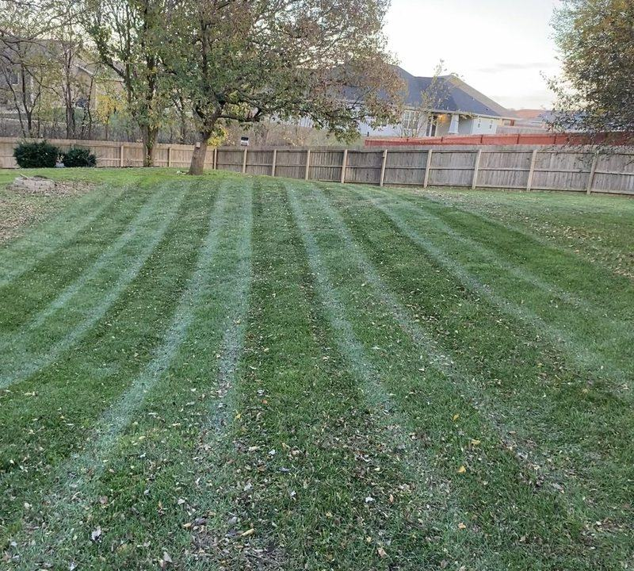

Lawn care
Mowing & Maintenance
Weekly and biweekly mowing programs built around a clean, consistent finish.
- Mowing and trimming
- Crisp edging
- Hard-surface blow-off
- Residential and commercial routes